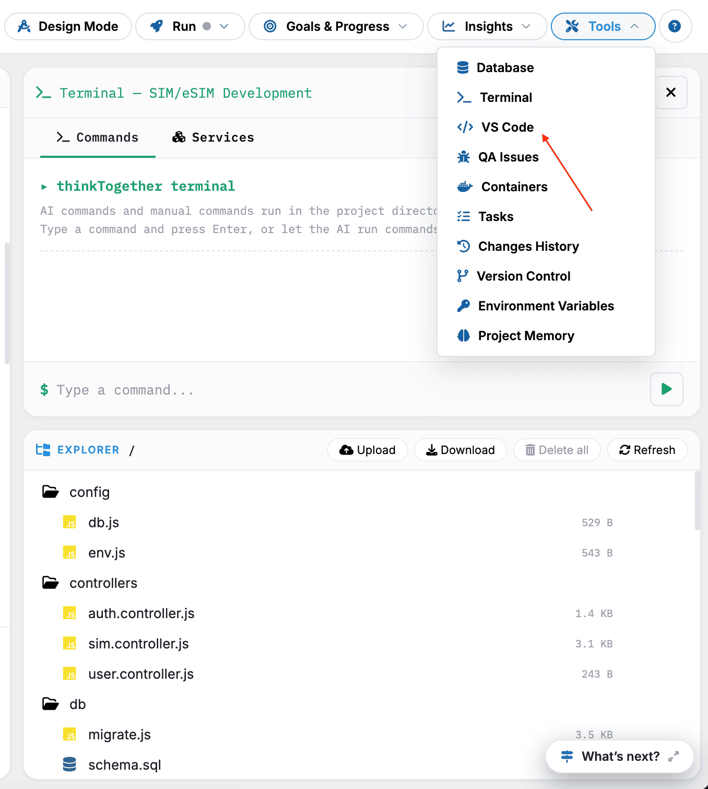
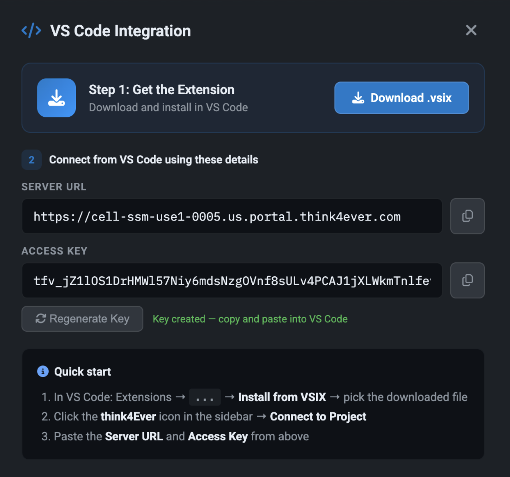
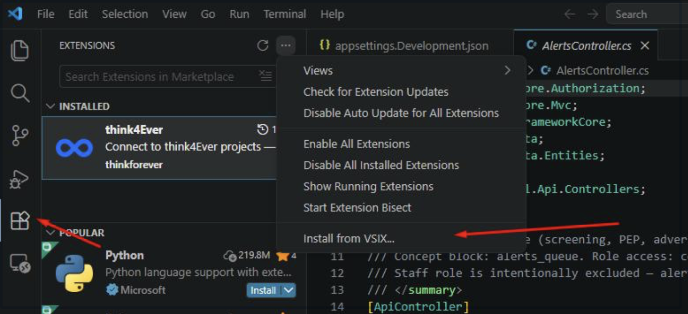
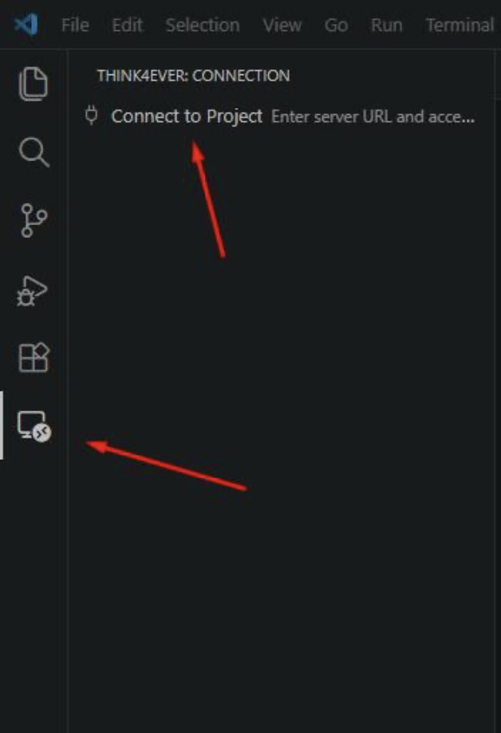

Connect your project to VSC (Visual Studio Code)

To connect your project to VS Code:
- Click the VS Code button (highlighted in the top-right corner).
-
VS Code Integration popup will be prompted.

- Ensure the VS Code extension is installed on your browser. If not, click the Download.vsix button then install.
- Once installed, click on the extension icon in the sidebar, then select Think4Ever icon.
- Click the ... (More Actions) icon at the top of the Extensions pane.
-
Click Install from VSIX

- Choose your .vsix file from the file explorer to complete the installation.-
-
Once opened, your project files will appear in the Explorer
panel on the left side.

Troubleshooting: If VS Code does not open automatically
Try these:
- Allow pop-ups in your browser
- Refresh the page and click the button again
- Check if your browser blocked the redirect
Optional: Open Terminal in VS Code
Inside VS Code:
- Go to Terminal → New Terminal
-
Or press:
- Ctrl + ` (Windows)
- Cmd + ` (Mac)